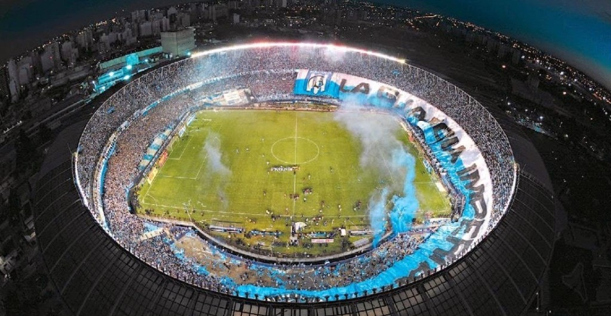
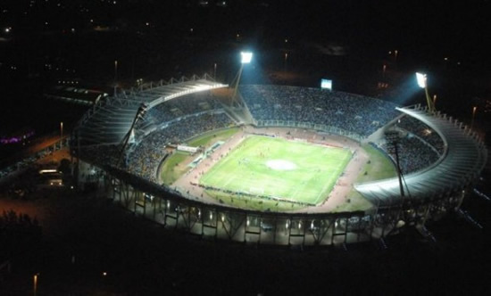
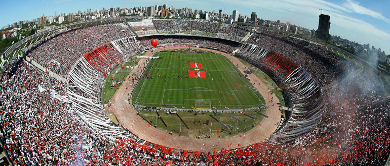
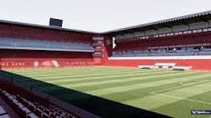

Estadio de Boca, La Bombonera
Estadio de Racing, El Cilindro

Estadio de Independiente

Estadio Estadio Mario Alberto Kempes

Estadio de River, El Monunmental

Estadio Único de La Plata

Estadio de Velez

Estadio San Lorenzo, el Nuevo Gasómetro

Estadio de Argentinos

Estadio de Defensa y Justicia

Estadio de Estudiantes de la Plata

Estadio de Lanus

Estadio de Newells

Estadio de Rosario Central